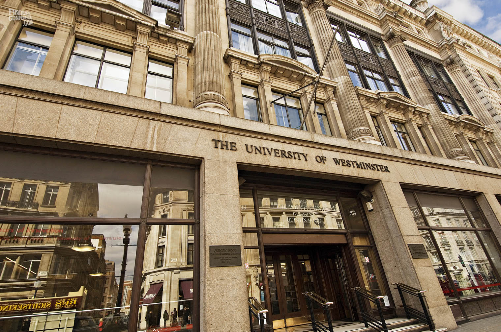

Образование в Англии
Добро пожаловать в Англию!
Система образования Великобритании имеет более глубокие корни, чем история многих современных государств. И традиция приёма иностранных студентов имеет почти такие же древние корни. Столетиями (пожалуй, на протяжении последних лет пятисот) иностранцы отправляли своих детей в школы и университеты Туманного Альбиона. Традиция получения образования в Англии иностранцами настолько укоренилась в самой системе образования, что уже и страну невозможно представить без «пёстрой толпы» молодых иностранцев, приезжающих сюда за знаниями и новыми впечатлениями. Политические и бизнес-элиты некоторых стран подчас наполовину состоят из выпускников британских школ и университетов! Это «студенческое братство» создаёт традицию взаимного уважения, толерантности, равноправия – того, чем славится и сама Великобритания. Образование в Англии побуждает студентов к самостоятельности, самодисциплине и достижению намеченных целей благодаря собственным усилиям.
Практически каждое высшее учебное заведение Великобритании может похвастаться знаменитыми выпускниками. Например, в стенах London School of Economics and Political Scince (LSE) учились 15 лауреатов Нобелевской премии, а также экс-президент США Джон Кеннеди и солист The Rolling Stones Мик Джаггер. Любопытно, что в Casino Royale (2006) - одном из фильмов о неуловимом шпионе Джеймсе Бонде, утверждается, что отец главного героя Эндрю Бонд был студентом LSE. Выпускниками знаменитого University of Oxford в свое время стали 25 премьер-министров Великобритании, в том числе Тони Блэр и Маргарет Тетчер, а также, целое созвездие выдающихся личностей.
Что касается процесса поступления, то прошу вас ознакомиться с информацией перейдя по ссылке.
Минимальный уровень знания языка IELTS - 6.5.
Позновательное видео
Приемущества высшего образования в Англии:
Краткая информация
| Город | Лондон |
| Университет | Вестминстерский университет (University of Westminster) |
| Описание университета | UniversityofWestminster расположен в самом центре Лондона. История университета берёт своё начало с 1838 года, когда был образован политехнический институт. С 1992 г. институт получает статус университета. Это один из старейших и известнейших университетов в Великобритании и уважаемый университет во всём мире. Здесь всегда чутко поддерживали и развивали инновационные проекты, передовые технологии, вводили свежие курсы, организовывали новые специальности. Первая фотостудия Европы открылась именно в Университете Вестминстера. Здесь же был проведен первый в Великобритании платный киносеанс. Сейчас в UniversityofWestminster обучается 22 000 студентов, включая 5000 международных студентов из 150 стран мира. |
| Cайт университета | Click |
| Специальности | 1. Бизнес экономика |
| 2. Бизнес информационные системы | |
| Cайт факультета | Click |
| Язык | Английский |
| Режим обучения | Стационар |
| Описание курса | Описание специальности вы найдете перейдя по прямой ссылке - Click |
| Стоимость обучения | бакалавриат - от 12 250 фунтов стерлингов, магистратура - от 12 000 фунтов стерлингов |
| Проживание | Аренда жилья будет стоить около 150-200 долларов в месяц. |
Фотографии
|  |